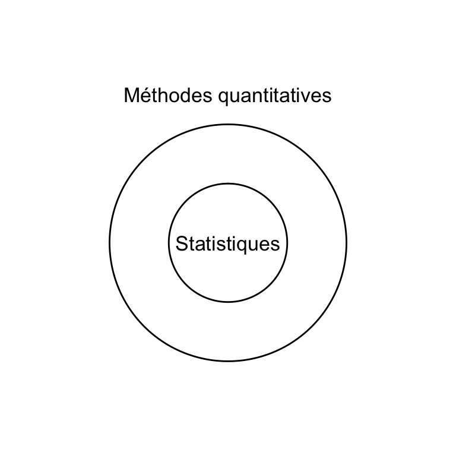
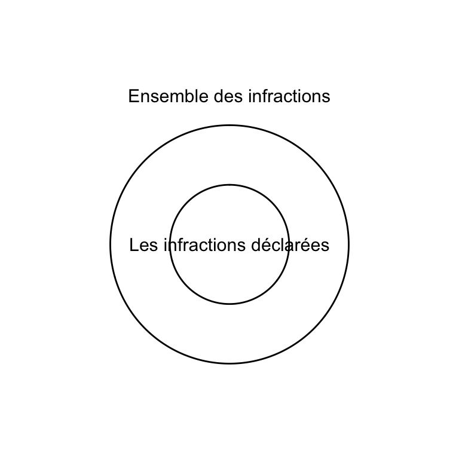
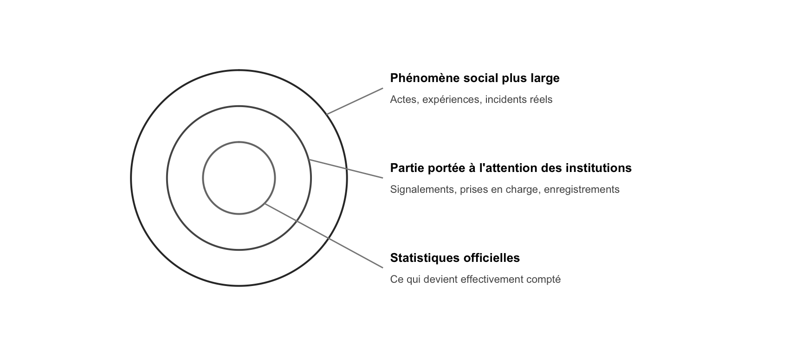
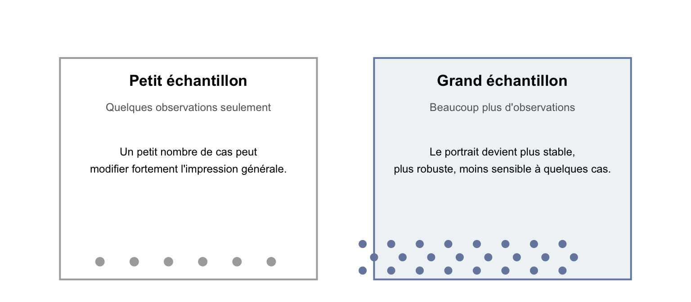
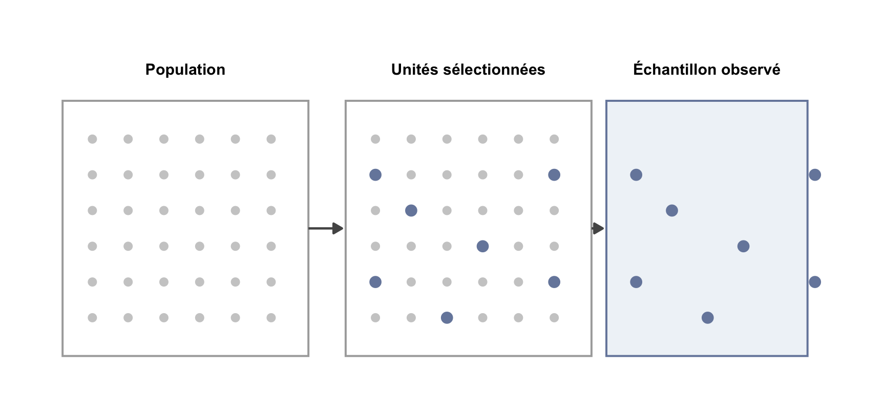
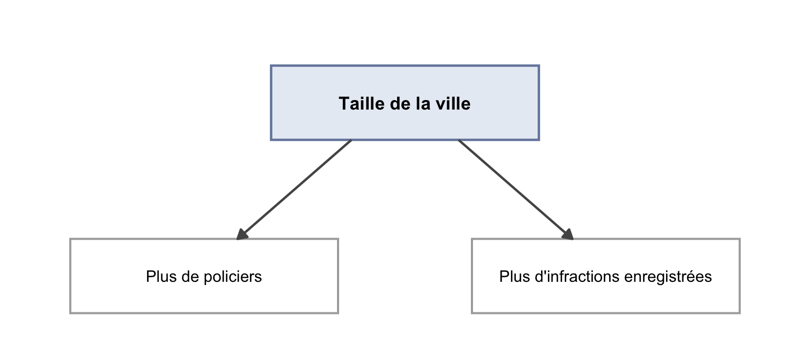

CRM3734: Méthodes quantitatives en criminologie
2026
Les criminologues pose des questions importantes pour lesquels les réponses relèvent fréquement de données de nature numérique et catégorielle.
Élément important
Les méthodes quantantitatives ne sont pas seulement un ensemble de calculs. C’est d’abord une approche systématique pour raisonner avec des données numériques et catégorielles souvent imparfaites.
Les méthodes quantitatives et qualitatives ne s’opposent pas. Elles répondent à des questions différentes et deviennent bien souvent complémentaires.
Les méthodes quantitatives constituent l’approche globale de recherche basée sur des données numériques et catégorielles.
Les statistiques représente l’ensemble des techniques utilisés pour analyser les données.

Méthodes quantitatives
Ensemble de méthodes permettant de résumer, comparer, interpréter et visualiser des données numériques et catégorielles, tout en indiquant le degré d’incertitude qui accompagne ces résultats.
Données numériques
Les données numériques sont des informations exprimées sous forme de nombres.
Il y a plus de 200 services de police au Canada.
Données catégorielle
Les données catégorielles sont des informations classées en catégories ou groupes.
Les victimes, les accusés et les témoins.
Les données du cours ressembleront à celles utilisées dans la pratique :
Statistiques policières Infractions portées à l’attention de la police.
Enquêtes de victimisation Expériences déclarées par les personnes.
Données correctionnelles Admissions, séjours, libérations.
Données judiciaires Accusations, verdicts, peines.
Données socioéconomiques Pauvreté, âge, quartier, scolarité.
Collecter des données sur des phénomènes sociales est un défi.
Ainsi, les données sociales sont rarement complètes.
Important
Le premier réflexe d’un bon analyste n’est pas seulement de se demander “que disent les chiffres?” mais aussi “quelles sont leurs limites?”
Certaines formes de victimisation ou d’infraction restent partiellement invisibles dans les statistiques officielles.

Plus le phénomène est sensible, stigmatisé, privé ou difficile à déclarer, plus l’écart entre le cercle extérieur et le centre peut être grand.
Pendant tout le semestre, nous reviendrons à une même question :
Que peut-on apprendre sur le crime, les institutions et les inégalités à partir de données toujours incomplètes?
1. comprendre ce que font les statistiques
2. voir pourquoi elles sont indispensables en criminologie
3. établir les grandes idées du cours sans vous noyer dans la technique
Statistique
Ensemble de méthodes permettant de résumer, comparer et interpréter des données, tout en indiquant le degré d’incertitude qui accompagne ces résultats.
Elle rend les données lisibles
Elle rend le doute visible
Sans statistique
Avec statistique
En criminologie, ces approches ne s’opposent pas. Elles répondent à des questions différentes et deviennent souvent plus fortes lorsqu’elles se complètent.
Étape 1 du raisonnement
Que comptons-nous exactement?
Avant toute analyse, il faut savoir d’où viennent les chiffres et ce qu’ils laissent hors champ.
Les données du cours ressembleront à celles utilisées dans la pratique :
Statistiques policières Infractions portées à l’attention de la police.
Enquêtes de victimisation Expériences déclarées par les personnes.
Données correctionnelles Admissions, séjours, libérations.
Données judiciaires Accusations, verdicts, peines.
Données socioéconomiques Pauvreté, âge, quartier, scolarité.
Les données criminelles ne mesurent jamais “la criminalité” au complet.
Elles mesurent plutôt :
Important
Le premier réflexe d’un bon analyste n’est pas seulement “Que disent les chiffres?” mais aussi “Que comptent-ils exactement?”
Certaines formes de victimisation ou d’infraction restent partiellement invisibles dans les statistiques officielles.

Plus le phénomène est sensible, stigmatisé, privé ou difficile à déclarer, plus l’écart entre le cercle extérieur et le centre peut être grand.
Étape 2 du raisonnement
Comment une intuition devient-elle une analyse?
Le travail statistique est un enchaînement de décisions, pas une formule magique.
1. Formuler
Transformer une intuition en question précise.
2. Mesurer
Choisir les variables et recueillir les données.
3. Examiner
Nettoyer, décrire, comparer, visualiser.
4. Interpréter
Relier les résultats à une théorie et à leurs limites.
Les quartiers plus défavorisés enregistrent-ils davantage d’infractions contre les biens?
Pour y répondre, il faut au minimum :
Étape 3 du raisonnement
Voir ce qu’on observe, puis juger ce que cela permet de conclure
La description organise les données. L’inférence évalue jusqu’où on peut généraliser.
Elles répondent à la question :
Que voit-on dans les données?
Elles répondent à la question :
Que peut-on conclure au-delà des données observées?

L’idée du jour n’est pas la formule. C’est l’intuition suivante : un résultat fondé sur très peu d’observations est plus fragile.
Étape 4 du raisonnement
Ce que nous observons n’est presque jamais le tout
L’inférence commence avec cette asymétrie simple : peu de cas observés, beaucoup de conclusions tentantes.
Nous observons rarement toute la population qui nous intéresse.
Le plus souvent, nous travaillons avec un échantillon, puis nous essayons de dire quelque chose de défendable sur une population.

Dans le cours, une grande partie du raisonnement statistique consiste à ne pas oublier ce passage de l’échantillon vers la population.
L’objectif central de l’inférence statistique est de déterminer si un résultat observé dans un échantillon :
Étape 5 du raisonnement
Pourquoi une association n’est pas encore une explication
Le lien observé entre deux variables peut être réel, trompeur ou partiel. Il faut apprendre à résister au raccourci causal.
Quand deux variables évoluent ensemble, il est tentant de conclure qu’une cause l’autre.
En criminologie, cette erreur est coûteuse :

Deux phénomènes peuvent évoluer ensemble sans que l’un soit la cause directe de l’autre.
Il peut être vrai que :
Le lien observé entre police et criminalité peut donc être associé à une troisième variable, plutôt qu’à un effet causal direct.
Ce que ce cours entraîne
Une discipline de lecture, de jugement et d’interprétation
Le but n’est pas d’impressionner avec du vocabulaire technique, mais de raisonner plus proprement.
À la fin de la session, vous devriez être capables de :
Vous n’avez pas besoin :
Votre travail intellectuel consistera surtout à poser de bonnes questions et à interpréter avec rigueur ce que les données permettent, et ne permettent pas, d’affirmer.
Méthode de travail
Pourquoi le cours passera par du code
Parce qu’une analyse convaincante doit aussi être vérifiable et reproductible.
R est un langage de programmation conçu pour travailler avec des données.
Nous l’utiliserons parce qu’il est :
Une analyse reproductible laisse une trace explicite :
L’objectif n’est pas seulement d’obtenir un résultat.
L’objectif est de pouvoir montrer comment ce résultat a été produit.
Idée directrice
Les statistiques servent moins à certifier qu’à mieux questionner
Le cours commence ici : apprendre à transformer des chiffres en arguments discutables, plutôt qu’en slogans.
La statistique est moins une machine à produire des certitudes qu’un ensemble d’outils pour réduire l’arbitraire dans notre manière de raisonner sur le monde social.
En criminologie, elle est utile parce qu’elle nous aide à passer :
Au prochain cours, nous commencerons à travailler plus concrètement avec les données :
Le cours ne vous demande pas de croire aveuglément aux chiffres. Il vous demande d’apprendre à mieux les interroger.